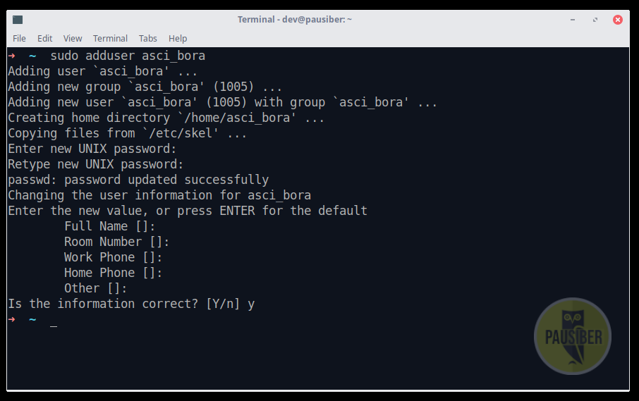
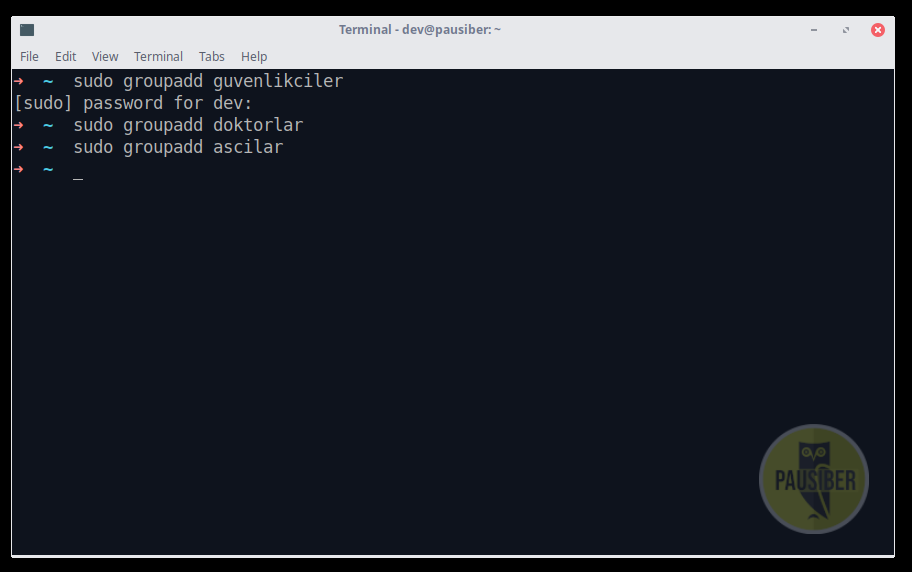

Hafta 2 - Kullanıcı-Grup Yönetimi ve Dosya-Dizin İzinleri
Amaç : Kullanıcı-grup yönetimi ve dosya-dizin izinleri
Hastane Örneği Üzerinden Açıklanması
Bir hastane düşünün, bu hastanede çalışanların kullanabileceği yanlız bir tane bilgisayar var. Ve hastanemizde çalışan üç ana meslek grubu var. Bunlar; doktorlar, güvenlik görevlileri ve aşçılar.

Bu çalışanların tek bir bilgisayarı kullanmasının iki farklı seneryosu olabilir.
1 - Üç meslek grubu da aynı bilgisayarı tek oturum
şekilde kullanabilir.
Bu durumda doktor, bilgisayarı kullandığı zaman, olması gerektiği gibi hastalarının; raporlarına, filimlerine, ameliyat görüntülerine vb.. bilgilere ulaşabilir. Aynı zamanda diğer meslek grupları ile ortak bir bilgisayar kullandığından; güvenlik kameralarına, o aynın mutfak masraflarına da bakabilir.
Ve bu durum diğer meslek grupları içinde geçerlidir. Bir güvenlik görevlisinin ya da aşçının herhangi bir hastanın raporlarına erişebilmesi ne kadar güvenli ve doğurudur?
işte bu durumun yaşanmaması için, her bir çalışan için ayrı bir kullanıcı oturumu oluştururuz.
2 - Herbir çalışan için ayrı bir oturum açılabilir.
Bu durumda herbir çalışanın kendine ait bir kullancısı olacağından bir önceki durumda yaşanan dosya erişim karmaşası bu sefer olmayacaktır. Yani hiç bir aşçı, güvenlik kameralarına erişip bu kayıtlar ile oynayamayacaktır. Her bir kullanıcının yetkileri bellirli olacaktır.
Hastane Örneğimizi Uygulayalım
Şimdi gelin bu hastaneye iki tane doktor, iki tane güvenlik görevlisi ve iki tane de aşçı ekleyelim.
- Doktorlar
- doktor_beyza
- doktor_ahmed
- Güvenlikçiler
- guvenlik_aykut
- guvenlik_ayse
- Aşçılar
- asci_bora
- asci_hayriye
GNU/Linux dağıtımlarında, sisteme bir kullanıcı eklemek için adduser komutu kullanılabilir.
[~#] adduser kullanıcının_adı



Şuan sistemimize altı adet kullanıcı ekledik.
Eklediğimiz Kullanıcıları Görüntüleyelim
GNU/Linux'da sistemde bulunan kullanıcılar /etc/passwd dosyasında sıralanır. Kullancıların bilgileri bu dosyada saklanır.
Bu dosyayı görüntülemek için;
[~$] cat /etc/passwd

Dosya incelendiğinde dev:x:1000:1000:PauSiber Dev,,,:/home/dev:/usr/bin/zsh gibi ifadeler gözükür. Hadi şimdi bu ifadelerin ne anlama geldiğini açıklayalım.
| ifade | açıklama |
|---|---|
| dev | kullanıcı adı |
| x | kullancının parolasını temsil eder |
| 1000 | kullanıcının üyelik numarasıdır (user ID) |
| 1000 | kullanıcının ait olduğu grubunn numarasıdır (group ID) |
| PauSiber Dev | kullancı hakkında kayıtlı bilgi |
| /usr/bin/zsh | kullanıcının shell dizini |
Gruplarımızı Oluşturalım
Peki bu hastanede bir tane mi doktar var ? Tabiki de hayır. Bir meslek grubuna dahil birden fazla çalışan olabilir. Aynı meslek grubunda bulunan çalışanların görev tanımları birbirleri ile örtüşür. Aynı meslek grubunda olanları gruplara toplamamız mantıklık bir hareket olacaktır.
Şuan hastanemizde üç farklı meslek grubuna ait ikişer tane çalışanımız var. Gelin şimdi bu meslek grupları için sistemizde bunu ifade edecek yeni gruplar oluşturalım.
GNU/Linux dağıtımlarında, sisteme bir grup eklemek için groupadd komutu kullanılabilir.
[~#] groupadd grubun_ismi

Sistemimize üç adet yeni grup ekledik. Sistemimizde bulunan gruplar /etc/group dosyasında sıralanır.
Bu dosyayı görüntülemek için;
[~$] cat /etc/group

Son görselde de görüldüğü üzere bizim eklediğimiz grupların haricinde, öceden eklediğimiz kullacılar da burda gözükmekde. Örneğin doktor_beyza
gibi bir grup sistemde çoktandır eklenmiş durumda. Peki bu nasıl oluyor?
GNU/Linux dağıtımlarında, sisteme yeni bir kullanıcı eklediğinizde, sisteme aynı anda bu kullanıcı adınında bir de grup ekler.
Çalışanlarımızı Gruplarına Ekleyelim
Evet, şuan hastanemizde altı adet çalışan ve bununla birlikte henüz daha hiç bir personeli dahil etmediğimiz üç tane de meslek grubumuz var. Şimdi çalışanlarımızı ait oldukları meslek gruplarına ekleyelim.
Bunu yapmak için gpasswd komutu kullanılabilir.
[~#] gpasswd --add kullanıcı_adi grup_adi
Not : Burada --add parametresi oldukça kritiktir. Eğer kullanılmaz ise kullanıcıyı hali hazırda bulunduğu tüm gruplardan çıkarır ve yeni gruba ekler. Fakat bizim istediğimiz bu değil, kullanıcının hali hazırda bulunduğu grupları değiştirmek istemiyoruz, yalnızca yeni bir gruba dahil etmek istiyoruz, bu durumda –add parametresi kullanmamız bir gerekliktir.

Ekleme işlemlerimizi yaptık. Şimdi /etc/group‘ u yeniden görüntüleyelim.

Başarılı bir şekilde personelimizi gruplarına ekledik.
Hastane Müdürümüz, Nam-ı Değer ROOT !
Şimdi sıra hastanenin müdüründen bahsetmeye geldi. Hastane müdürü hastanedeki en yetkili kişidir. Doktorların, güvenlik görevlilerinin ve aşçının erişebildiği verilerin hepsine erişebilir. Aslında o da bir çalışandır, fakat özel bir çalışandır. Yetkileri onu diğer çalışanlardan ayrıştırır.
GNU/Linux sistemlerde bahsettiğimiz hastane müdrünün karşılığı root kullanıcısıdır. Root kullancısı sistemdeki en yetkili kullancıdır. Sistemdeki tüm dosyalara erişim yetkisi vardır.
Çalışanların Odaları, /home dizinleri
Hastanemizde çalışan tüm personelin kendine ait bir odası vardır. Çalışanlar bu odalarda kendi kişisel eşyalarını saklarlar.
GNU/Linux işletim sistemlerinde sisteme kayıtlı her insan kullancı için /home dizini altında o kullancıya tahsis edilmiş bir alan mevcuttur. Kullanıcılar bu dizinde verilerini diledikleri şekilde depolarlar.
root kullancısının da kendine ait bir odası vardır. Fakat root kullacısına ayrılmış bu alan direk root dizini altında ayrılmış /root dizinidir.

Hastanemizden Çalışan Çıkaralım
Hastanemizden, yani sistemimizden bir kullanıcısı silmek istersek userdel komutu kullanabiliriz.
[~#] deluser --remove-home kullancı_adi
Şimdi sistemizide kayıtlı olan doktor_ahmedi aşağıdaki örnekteki gibi işten çıkaralım.

Kullancının Parolalarının Değiştirilmesi
Eğer bir kullanıcı parolasını değiştirmek ister ise passwd komutu kullanılabilir.
[~$] passwd

Bir Çalışanımızı Grubundan Çıkaralım
Örneğin guvenlık_aykut kullanıcısının artık guvenlik grubunda bulunmasını istemiyorsak gpasswd ile birlikte --delete parametresini kullanarak bu işlemi gerçekleştirebiliriz.
[~#] gpasswd --delete guvenlik_aykut guvenlikciler

Kullanıcı örnek amacıyla grubundan çıkarmıştık, şimdi geri dahil edelim :).
[~#] gpasswd --add guvenlik_aykut guvenlikciler
Bir Grubumuzu Silelim
Örneğin sistemimize hemşireler grubunu eklemiş olalım, eğer bu gruba ihtiyacımız artık kalmaz ise grubu silebiliriz. Grubu silmek için groupdel komutu kullanılır.
[~#] groupdel hemsireler

Hastane Yönetimi
Hastane örneğimizde hastalar, kameralar ve yemekhane dizinlerimiz olacak. Fakat tahmin edeceğiniz üzere bu dosyalara yalnızca belirli meslek gruplarının ve belirli kullanıcıların yetki sahibi olmasını bekleriz.
Aşağıdaki gibi dizinleri oluşturalım.

Dizinlerimiz içersine aşağıdaki gibi gerekli dosyaları da oluşturalım.
Bu dizinlerin sahiplik ve izinlerini ayarlama işlemine geçmeden önce GNU/Linux'da dosya ve dizin kavramlarından bahsetmeliyiz.

Dosya ve Dizin Kavramları
GNU/Linux'ta her şey birer dosyadır. [1]
Özünde dizinler de dosyaların konumunu belirten birer özel dosyadır. Dizinler veri içeremez, yalnızca konum belirtmek amaçlı kullanılabilirler. Dizinlerin bir türü yoktur, uzantısı yoktur. Dosyaların ise bir türü vardır, uzantısı bulunabilir.
Dizin ve dosya isimleri aynı olamaz.
Dosya ve Dizin İzinlerinin İncelenmesi
ls ile dosyaların izinleri incelenebilir.
[~$] ls -l fileName

Dosya ve dizin işlemlerine bakıldığında 10 karakterden oluşan bir yapı görünür.
Bu karakterler
- dosyalar için r[read] okumak, w[write] yazmak, x[execute] çalıştırmak
- dizinler için r[read] içeriğini görüntüleyebilmek, w[write] alt dosya ve dizinler oluşturabilmek, x[execute] cd ile içine girebilmek
izinlerini temsilen kullanılır.
Bunları aşağıdaki gibi üçerli olarak gruplandırarak incelemekte fayda vardır.

Yani bu örnektekinin;
- bir dizin olduğunu,
- dosya kullanıcısının okuma/yazma/çalıştırma,
- dosya grubunun okuma/çalıştırma,
- diğer herkesin de okuma/çalıştırma
iznine sahip olduğunu görüyoruz. Ayrıca bu dosyaların fsutil kullanıcısına ait olduğunu ve group'unun users olduğunu incelemiş olduk.
Hastane Dosya Sahipliklerinin Değiştirilmesi
Şimdi teorik bilgimizi edikten sonra hastane örneğimize geri dönebiliriz.
Dosyaların sahipliklerini user ve group bazında değiştireceğiz. Bunun için chown komutu kullanabiliriz. Yapısı oldukça basittir.
Genel syntax örnekleri aşağıdaki gibidir.
[~#] chown yeniSahip dosya_adi
[~#] chown yeniSahip:yeniGroup dosya_adi
[~#] chown :yeniGroup dosya_adi
Aşağıdaki gibi 3 dizin için de -R parametresini kullanarak dosyaların group bilgilerini değiştirelim.
Burada -R parametresini kullanma sebebimiz belirttiğimiz işlemi recursive olarak tüm alt(sub) dosya ve dizinlere uygulanması gerektiğini belirtmek içindir.

Tüm hastane dosyalarımızın group sahipliklerini değiştirdik. Fakat dosyaların kullanıcı sahiplikleri hale belirlenmiş değil. Her dosyanın sahibi olarak meslek grubundan belirlenen bir kullanıcıyı atamak istiyoruz. Aşağıdaki gibi adımları gerçekleştirdik.

Dosya sahipliklerini ayarladık.
Hastane Dosya İzinlerinin Değiştirilmesi
Burada kurmak isteğimiz yapı şu şekilde; ilgi dizinler ve dosyalar meslek grubundaki herkes tarafından okunabilir, çalıştırılabilir olmalı; meslek grubundan belirlenen yalnızca bir kişi dosya üzerinde değiştirme yetkisine sahip olmalı.
Bu için dosyaların izinlerini değiştireceğiz.
Bunun için chmod komutu kullanabilirz. Chmod'un iki tip kullanımı vardır; text method ve numeric method. Text method günlük kullanımda daha çok kullanılır, basit olması açısından. Numeric method daha çok script'lerde kullanılır.
Text Method'un genel kullanım syntax'ı aşağıdaki gibidir.
[~$] chmod kim=izinYetkisi dosyaAd
Burada kim ifadesi, işlemi hangi kişiler için yapacağını belirtmek için kullanırız.
| Text | Class | Açıklama |
|---|---|---|
| u | Owner | Dosyaya sahip olan kullanıcı |
| g | Group | Dosyanın ait olduğu grup |
| o | Other | Diğer herkes |
| a | All | Herkes (ugo ile aynı anlama gelir) |
Örnekte = olarak ifade ise verilen işlem ile ne yapılacağını belirtmek amacıyla kullanırız.
| Operator | Açıklama |
|---|---|
| + | Yetkiyi ilgili kullanıcılara ekler |
| - | Yetkiyi ilgili kullanıcılardan çıkarır |
| = | Yetkiyi eşitler |
İzin yetkisi ise verilecek olan izindir. Yani; r, w, x gibi ifadeler girilir.
Dosyalarımızın İzinlerini Ayarlayalım
Şimdi öğrendiğimiz teorik bilgileri, hastane örneğimiz üzerinde uygulayarak pratiğe dökelim.
İlk olarak tüm dosya group'larından yazma yetkisini çıkaracağız. Bunun için aşağıdaki gibi bir ifade kullanmamız yeterlidir. Aşağıdaki ifade, dosyanın group sahipliğinden yazma*[w]* yetkisini çıkarmamızı sağlar. Artık group yetkisi kullanırak dosya üzerinde yazma işlemi yapılamayacaktır.
[~#] chmod g-w -R dizin/

Ayrıca other'ın dosya üzerinde hiç bir yetkisinin olmasını istemiyoruz. Bunun için de aşağıdaki gibi örneğimizi uygularız. Other'ın sahip olduğunu tüm yetkiyi kaldırmış oluruz.
[~#] chmod o-rwx -R dizin/

Bu işlemi uyguladığımızda klasör'ün içinde neler olduğuna bile bakamayız, çünkü şu ana kadar olan tüm işlemleri PauSiber Dev'in normal kullanıcısı olan dev ile yaptık, dizinler üzerinde dev kullanıcısı other olarka gözükür. dev'in hiç bir yetkisi olmadığı için dizin içlerini göremeyiz.
Dizinlerin içersini görüntülemek için meslek grubundan bir kullanıcıya geçiş yapabiliriz.
Eğer dosyalar üzerinden yazma işlemi yapmak istersek te meslek grubundan şef olarak seçtiğimiz kullanıcıya geçiş yapmamız gerekir.
Başka bir kullanıcıya geçiş yapmak için su komutu kullanabiliriz.

Numeric Method ile İzin İşlemlerinin Yapılması
Az önce, text method örneklermizi yapmadan önce, numeric method da olduğunu söylemiştik. Bu method'u uygulayabilmemiz için bazı bilgilere ihtiyacımız var.
Daha önceden öğrendiğimiz gibi, dosya ve dizinlerin izinleri r, w ve x ile temsil edilir. Her yetkinin numarasal olarak bir karşılığı vardır. Bunlar aşağıdaki gibidir.
| İzin | Numara Karşılığı |
|---|---|
| r | 4 |
| w | 2 |
| x | 1 |
Bir dosyanın yetkisinin numarasal karşılığı göstermek için 3 basamaklı bir sayı kullanırız. Bu 3 basamaklı sayıyı elde etmek için yetkileri üçerli olarak gruplandırıp toplarız.
Kendimiz toplamak yerine, bir dosyanın yetkisinin numarasal karşılığı direkt olarak görmek için stat komutu kullanılabilir.
[~$] stat -c %a dosyaAdi

Dosyanın izinlerini numeric method ile değiştirmek istiyorsak aşağıdaki gibi bir syntax kullanırız.
[~$] chmod XXX dosyaAdi
Örneğin hastalar klasörü içersinde bulunan dosyaların, other'lar tarafından okunabilir ve çalıştırılabilir olmasını istiyor olalım, aşağıdaki gibi yapabiliriz.

Text method kullanacak olsaydık, aynı işlemi yapmak için chmod o=rx * dememiz yeterdi.
Dosya Kilitlemek
Bir dosyayı üzerinde izni verilmiş olsa bile kilitlemek, yani değişik yapılmaz olsun istiyorsak chattr komutu kullanabiliriz. Kullanımı oldukça basittir.
Kilitlemek için :
[~$] chattr +i dosyaAdi
Kilidi açmak için :
[~$] chattr -i dosyaAdi
Bu hafta neler yaptık ?
Kullanıcı-Grup Yönetimi için;
- Bir kullanıcının parolasının nasıl değiştirileceğini,
- Sisteme yeni kullanıcıların nasıl ekleneceğini,
- Yeni grupların nasıl oluşturulacağını,
- Gruplara kullanıcıların nasıl ekleneceğini,
- Root kullanıcısının mantığını,
- /home dizinlerinin mantığını,
- Kullanıcıların nasıl silineceğini,
- Gruplardan kullanıcıların nasıl çıkarılacağını,
- Grupların nasıl silineceğini öğrendik..
Dosya-Dizin İzinleri için;
- GNU/Linux'ta dizinlerin de aslında birer dosya olduğunu,
- Yetki kavramlarını,
- Dosya sahipliklerinin nasıl değiştirileceğini,
- Text ve numeric method ile dosyaların izinlerinini nasıl değiştirileceğini,
- Dosyaların nasıl kilitlenebileceğini öğrendik..